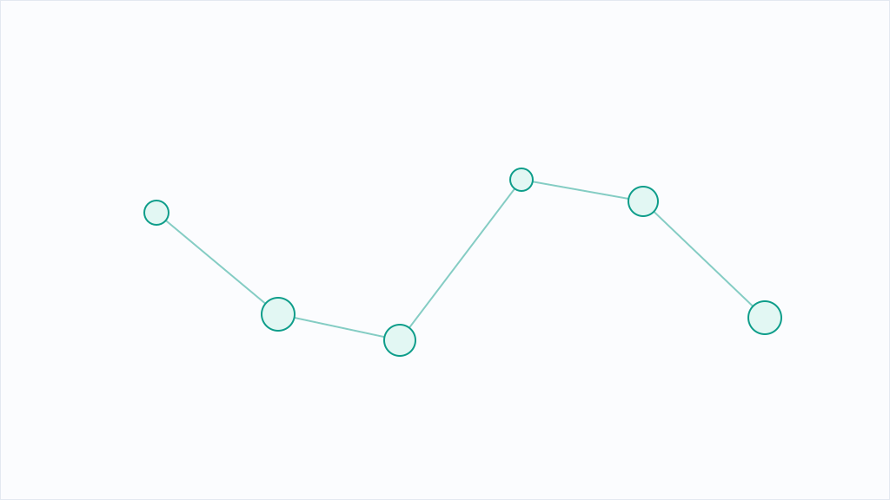

Uravation、AI検索対策（AIEO）の実装代行を提供開始。5つのAI検索での引用率を実測し、受け皿ページの原稿・構造化・配信・週次計測まで引き受けて、回答に引用される状態をつくる

『Perplexity に聞いたら自社ページが引用元の1番目に、20分で』──Uravationが9月23日に発表した「AI検索対策（AIEO）実装代行」は、AI検索時代の新しいSEOともいえるサービスだ。ChatGPT、Gemini、Perplexity、Claude、Google AI Overviewといった生成AI検索の回答に、自社ページが引用元として入る状態をつくる。狙いは単純：検索順位が高くても、生成AIが他社ページを引用すれば、ユーザーには自社の存在が見えない。引用されるかは『その問いに一次情報で答えているか』で決まる。Uravationの実測では引用率がPerplexity 63.4%からClaude 13.0%まで大きく変わり、サービスと問いの型によって異なることが分かった。興味深いのは、自社サイトの計測結果だ。プレスリリース配信から20分でGeminiの回答で1番目の引用元に入った事例がある。つまり、『どのページで、どう書くか』が素早く効く。本サービスは診断で終わらず、受け皿ページの原稿作成、構造化、プレスリリース配信、週次の計測・改善まで当社が実装する。企業がやることは、サイト編集権限の提供、事実確認、月1回30分の定例だけだ。料金は実測レポート30万円（1回）、実装代行は初期50万円＋月額20万円（最低3か月）。中小企業にとって『Google検索とAI検索の両対応』は必須になりつつある。同じキーワードでもプラットフォームによって異なる引用元を持つ時代、一つのSEOでは足りない。
※ 上記は配信元記事をもとにAIの鬼編集部が要約・再構成したものです。正確な内容は出典元をご確認ください。
このニュースの全文は、配信元でお読みいただけます。 ASCII.jpで元記事を読む →